CSSフレームワークであるBootstrapを使いこなせるようになることで、サービスを作る上で問題となるデザインにかける時間やリソースを削減できるようになりましょう。
Bootstrapは、twitter社が提供しているCSS/JS(JavaScript)のフレームワークです。予めCSSが用意されており、利用者はhtmlにそのCSSに対応するclassを持ったhtml要素を書き足すだけで、まるでデザイナーが監修したかのような綺麗なページを作成することができます。
JavaScriptは、HTML/CSSで作成したサイトに視覚的なエフェクトなどの機能を付け加える言語です。ある条件(例えば、ある要素の上にマウスポインタが重なった時など)に反応してデザインを変化させるといった、複雑なwebページを作成することができます。
Bootstrapを使えば、JavaScriptを使った視覚的効果も簡単に実現するすることができます。
以下に、Bootstrapをはじめとするフレームワークを利用するメリットをあげます。
例えば、以下のようなページはBootstrapを利用してコーディングされています。
同じCSSを利用していても、各種ブラウザによって表示が変わってしまうことがあります。BootstrapはこのCSSのズレを修正してくれます。また、Bootstrapを使えば簡単にPC/タブレット/モバイルでの表示の変化に対応することができます。先ほどのページを開いた状態でブラウザの幅を変えても、綺麗なレイアウトが保たれます。
このように、Bootstrapの使い方を学べば様々なレイアウトを簡単に実現できます。
早速Bootstrapを使ってみましょう。Bootstrapは結局のところ既に用意されたCSSファイルとJS(JavaScript)ファイルでしかないので、そちらを入手しhtml上でCSSファイルを読み込むことで利用できます。
まずは、以下のサイトにアクセスしてください。
続いて、以下の画像を参考にBootstrapのCSSファイルその他が入ったzipファイルをダウンロードします。
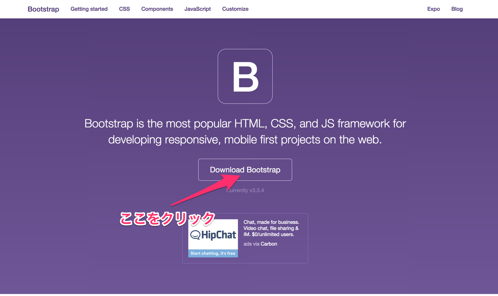
↓
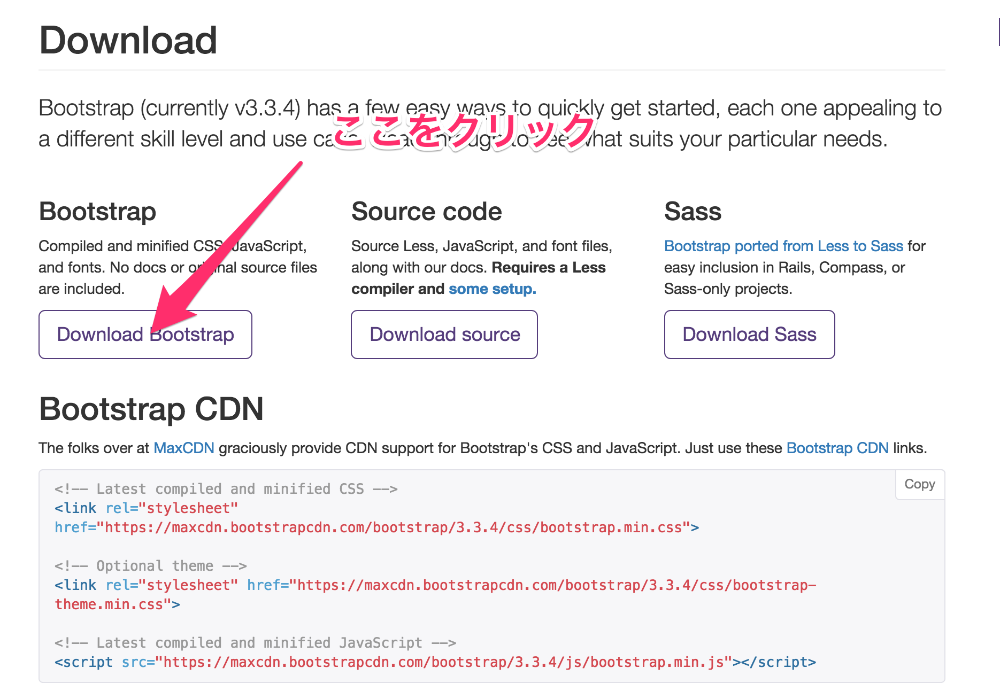
ファイルをダウンロードできたら、zipファイルを解凍します。bootstrap-3.3.4-dist.zipをダブルクリックしてください。
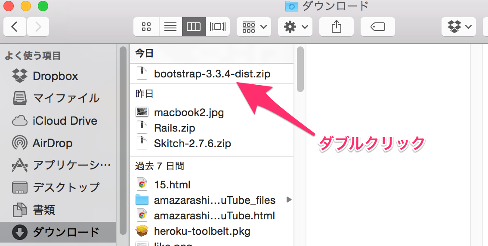
すると、以下のようなファイルが手に入ったと思います。
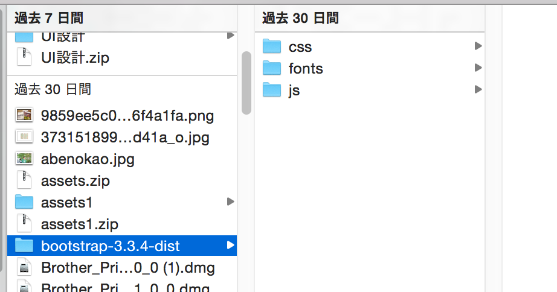
続いてhtmlファイルを作成し、そのhtmlファイルにBootstrapのCSSファイルなどを読み込みます。
まずは、htmlファイルやBootstrapのファイルを入れておくフォルダを作成します。今回は、コマンドラインを利用しDesktop上に作成してみましょう。
mkdirコマンドは、任意のディレクトリ(フォルダ)内に新たにディレクトリを作成するコマンドです。ターミナルから入力します。
【例】
1 2 3 4 5 6 |
$ mkdir ~/sample
# ホームディレクトリ直下に「sample」というディレクトリを作成する
#
$ mkdir ~/Desktop/test
# Desktopディレクトリ直下に「test」というディレクトリを作成する
|
1 2 |
$ mkdir ~/Desktop/bootstrap
# Desktp直下に「bootstrap」というディレクトリを作成する
|
作成したbootstrapというディレクトリに、先ほどダウンロードした bootstrap-3.x.x-dist の中身を移動します。以下のようなファイル構成にすればokです。
続いて、htmlファイルを作成して保存します。保存箇所は、先ほど作成したbootstrapというディレクトリの中です。
touchコマンドは、任意のディレクトリ(フォルダ)内に新たにファイルを作成するコマンドです。ターミナルから入力します。
以下に例を載せておきます。
【例】
1 2 |
$ touch ~/Desktop/sample.html
# ホームディレクトリ直下に「sample.html」というファイルを作成する
|
1 2 |
$ touch ~/Desktop/bootstrap/index.html
# Desktop/bootstrap直下に「index.html」というファイルを作成する
|
ここまでで、以下のようなファイル構成になっているか確認してください。
さて、作成したindex.htmlは、今はまだ何も書かれていません。そこで、BootstrapのHP上から、Bootstrapを読み込む基本的なHTMLをコピーして貼り付けます。
Bacic template というhtmlをコピー、先ほど作成したindex.htmlに貼り付けてください。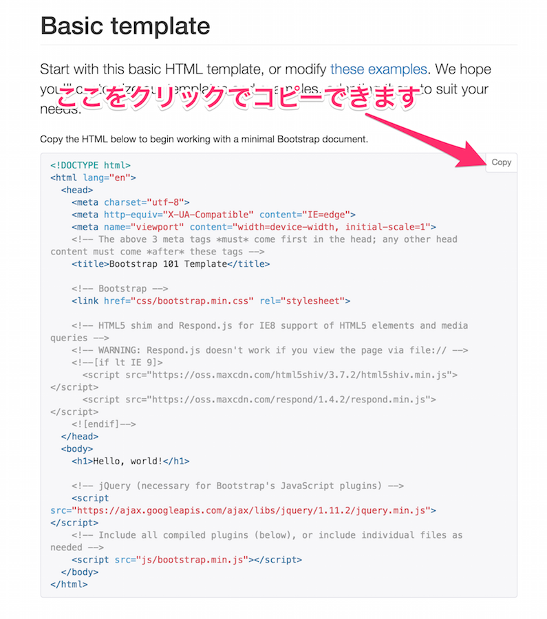
以下のようになればokです(ソースコードが更新される可能性があるので、必ずHPからソースコードをコピーしてください。)
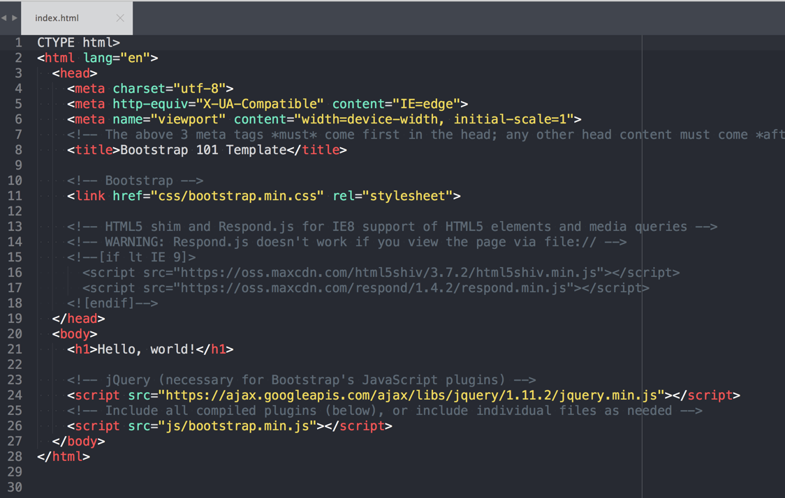
以上で、Bootstrapを利用するための準備が整いました。これからは、実際にBootstrapを利用してみます。
BootstrapのHP上には、htmlのサンプルがたくさん置かれています。早速見てみましょう。
以下のページにアクセスしてください。
下の方にスクロールしていくと、様々なhtmlのサンプルが置かれていることがわかります。
こうした既にclassの付いているhtmlタグのまとまりをコンポーネントと呼び、これらを組み合わせることで簡単にレイアウトができます(自分でhtml要素にclassをつけてレイアウトを作ることもできます)。
これらを自由にコピーし、文言などを変えることでオリジナルのサイトを作成していきます。
こちらから、今回は以下のヘッダー部分に良く使われるようなnavbarという部品を取ってみましょう。
まずは、navbarのサンプルコードをコピーします。以下のリンクのページから少し下にスクロールすると出てくる、navbarのコンポーネントをコピーしましょう。
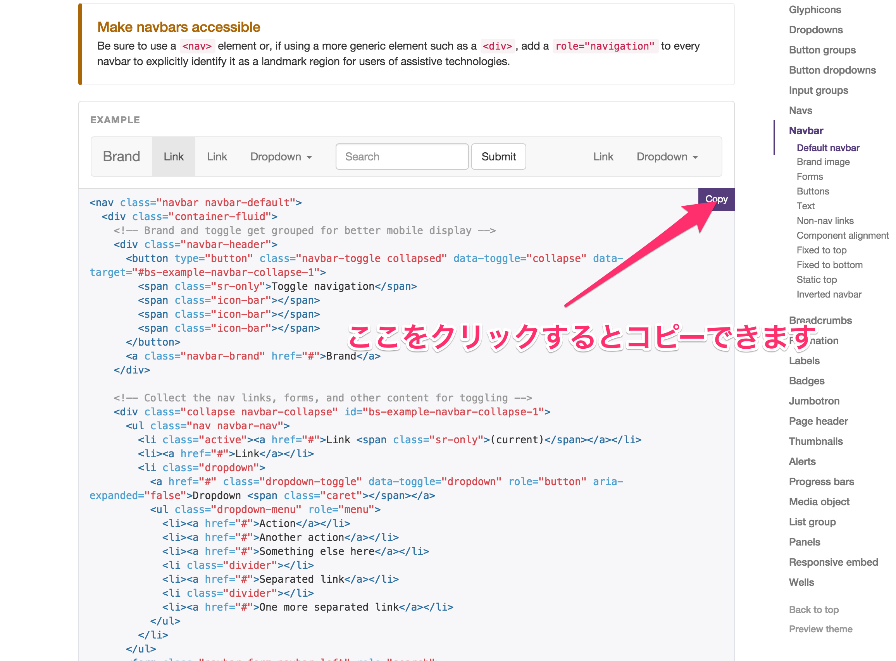
次に、それをindex.htmlに貼り付けましょう。 bodyタグの中の一番上の位置に貼り付けてください。
1 2 3 4 5 6 7 8 9 10 11 12 13 14 15 16 17 18 19 20 21 22 23 24 25 26 27 28 29 30 31 32 33 34 35 36 37 38 39 40 41 42 43 44 45 46 47 48 49 50 51 52 53 54 55 56 57 58 59 60 61 62 |
#省略
<body>
<nav class="navbar navbar-default">
<div class="container-fluid">
<!-- Brand and toggle get grouped for better mobile display -->
<div class="navbar-header">
<button type="button" class="navbar-toggle collapsed" data-toggle="collapse" data-target="#bs-example-navbar-collapse-1">
<span class="sr-only">Toggle navigation</span>
<span class="icon-bar"></span>
<span class="icon-bar"></span>
<span class="icon-bar"></span>
</button>
<a class="navbar-brand" href="#">Brand</a>
</div>
<!-- Collect the nav links, forms, and other content for toggling -->
<div class="collapse navbar-collapse" id="bs-example-navbar-collapse-1">
<ul class="nav navbar-nav">
<li class="active"><a href="#">Link <span class="sr-only">(current)</span></a></li>
<li><a href="#">Link</a></li>
<li class="dropdown">
<a href="#" class="dropdown-toggle" data-toggle="dropdown" role="button" aria-expanded="false">Dropdown <span class="caret"></span></a>
<ul class="dropdown-menu" role="menu">
<li><a href="#">Action</a></li>
<li><a href="#">Another action</a></li>
<li><a href="#">Something else here</a></li>
<li class="divider"></li>
<li><a href="#">Separated link</a></li>
<li class="divider"></li>
<li><a href="#">One more separated link</a></li>
</ul>
</li>
</ul>
<form class="navbar-form navbar-left" role="search">
<div class="form-group">
<input type="text" class="form-control" placeholder="Search">
</div>
<button type="submit" class="btn btn-default">Submit</button>
</form>
<ul class="nav navbar-nav navbar-right">
<li><a href="#">Link</a></li>
<li class="dropdown">
<a href="#" class="dropdown-toggle" data-toggle="dropdown" role="button" aria-expanded="false">Dropdown <span class="caret"></span></a>
<ul class="dropdown-menu" role="menu">
<li><a href="#">Action</a></li>
<li><a href="#">Another action</a></li>
<li><a href="#">Something else here</a></li>
<li class="divider"></li>
<li><a href="#">Separated link</a></li>
</ul>
</li>
</ul>
</div><!-- /.navbar-collapse -->
</div><!-- /.container-fluid -->
</nav>
<h1>Hello, world!</h1>
<!-- jQuery (necessary for Bootstrap's JavaScript plugins) -->
<script src="https://ajax.googleapis.com/ajax/libs/jquery/1.11.2/jquery.min.js"></script>
<!-- Include all compiled plugins (below), or include individual files as needed -->
<script src="js/bootstrap.min.js"></script>
</body>
#省略
|
以下のようにCSSがあたった状態で表示されたでしょうか。
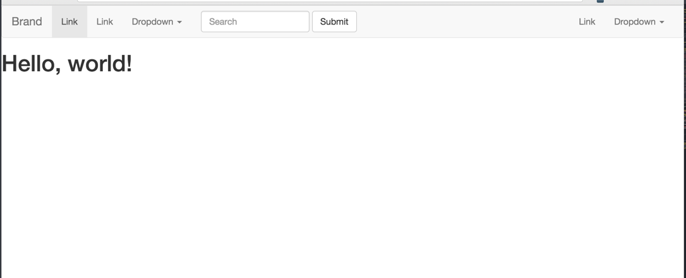
無事にnavbarが表示できたら、Bootstrapの導入は上手くいっています。
続いて、更に詳しくBootstrapについて学んでいきましょう。
Bootstrapを利用するメリットの一つは、優秀なgridレイアウトを利用できることです。
gridレイアウトは、要素の横並びレイアウトを簡単に実現できる仕組みです。使用法としては、Bootstrapに予め用意されているclassを指定するだけです。
私達が普段ブラウザを閲覧する道具は、主に3つあります。スマートフォン、PC、そしてタブレットです。Bootstrapは、これらの中のどのデバイスで閲覧されても、同一のCSSで対処できるように作られています。ブラウザの幅が変わっても、要素自体の幅を柔軟に変更してくれます。
Bootstrapで規定されている幅の区分は以下の通りです。
| 名前 | 幅区分 |
|---|---|
| Extra small(xs) | 幅768px未満 |
| Small(sm) | 幅768px以上、992px未満 |
| Medium(md) | 幅992px以上、1200px未満 |
| Large(lg) | 幅1200px以上 |
その仕組みは、ブラウザの横幅を12分割して自由に割合を当てはめることのできるclassによって成り立っています。
ある2つ以上の要素らにこのクラスを当てると、それらの要素を横並びにできます。その際、rowというクラスをもった要素を親要素とし、ブラウザ幅と横幅の割合を12分割に収まる範囲で指定する必要があります。
例えば、ブラウザの幅がExtra small(スマートフォン)の場合で、2つの要素を均等の横幅の割合で横並びにしたい時は、
といった形で指定します。実際のコードでは以下のようになります。
1 2 3 4 5 6 7 8 9 10 11 12 |
#省略
<body>
<div class="row">
<p class="col-xs-6">
これはtestです。これはtestです。これはtestです。これはtestです。これはtestです。これはtestです。これはtestです。これはtestです。これはtestです。これはtestです。これはtestです。これはtestです。これはtestです。これはtestです。これはtestです。これはtestです。これはtestです。
</p">
<p class="col-xs-6">
これはsampleです。これはsampleです。これはsampleです。これはsampleです。これはsampleです。これはsampleです。これはsampleです。これはsampleです。これはsampleです。これはsampleです。これはsampleです。これはsampleです。これはsampleです。これはsampleです。これはsampleです。
</p">
</div>
</body>
#省略
|
ブラウザ幅の指定は、一番小さいxsを指定しておけば、それ以上の幅の時も全てカバーしてくれます。実際に上のhtmlファイルをブラウザ上で確認し、幅を動かしてみた場合の挙動は以下のようになります。(わかりやすいように背景色をつけています)
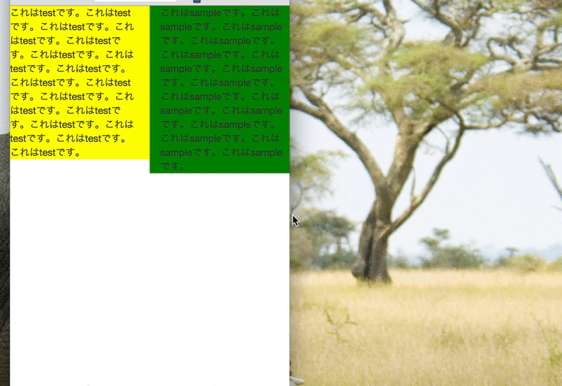
次に、横幅の比率を3:9にしてみましょう。
1 2 3 4 5 6 7 8 9 10 11 12 |
#省略
<body>
<div class="row">
<p class="col-xs-3">
これはtestです。これはtestです。これはtestです。これはtestです。これはtestです。これはtestです。これはtestです。これはtestです。これはtestです。これはtestです。これはtestです。これはtestです。これはtestです。これはtestです。これはtestです。これはtestです。これはtestです。
</p">
<p class="col-xs-9">
これはsampleです。これはsampleです。これはsampleです。これはsampleです。これはsampleです。これはsampleです。これはsampleです。これはsampleです。これはsampleです。これはsampleです。これはsampleです。これはsampleです。これはsampleです。これはsampleです。これはsampleです。
</p">
</div>
</body>
#省略
|
すると、挙動は以下のようになります。
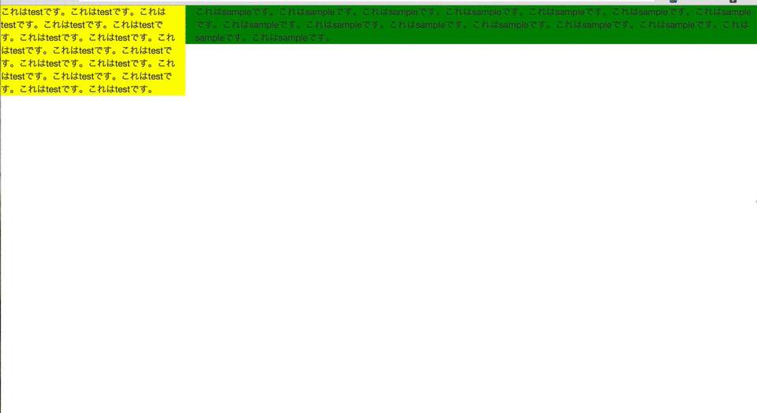
今度は、class指定をcol-xs-6ではなくcol-md-6にしてみましょう。
1 2 3 4 5 6 7 8 9 10 11 12 |
#省略
<body>
<div class="row">
<p class="col-md-6">
これはtestです。これはtestです。これはtestです。これはtestです。これはtestです。これはtestです。これはtestです。これはtestです。これはtestです。これはtestです。これはtestです。これはtestです。これはtestです。これはtestです。これはtestです。これはtestです。これはtestです。
</p">
<p class="col-md-6">
これはsampleです。これはsampleです。これはsampleです。これはsampleです。これはsampleです。これはsampleです。これはsampleです。これはsampleです。これはsampleです。これはsampleです。これはsampleです。これはsampleです。これはsampleです。これはsampleです。これはsampleです。
</p">
</div>
</body>
#省略
|
すると、今度はブラウザの幅が小さくなると要素の様子がかわります。
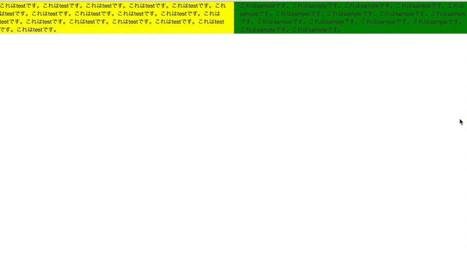
幅がmdの状態(幅992px以上、1200px未満)ではcol-md-6クラスが効き、それ以外の状態では効かなくなるためにこのような挙動になります。
containerクラスはBootstrapに予め用意されているクラスで、このクラスを指定したブロック要素を中央寄せにしてくれます。
早速使ってみましょう。
まずは、containerというクラスを指定したdiv要素を作成します。
1 2 3 4 5 6 7 8 9 10 11 12 13 14 |
#省略
<body>
<nav class="navbar navbar-default">
#省略
</nav>
<div class="container">
<h1>Hello, world!</h1>
</div>
<!-- jQuery (necessary for Bootstrap's JavaScript plugins) -->
<script src="https://ajax.googleapis.com/ajax/libs/jquery/1.11.2/jquery.min.js"></script>
<!-- Include all compiled plugins (below), or include individual files as needed -->
<script src="js/bootstrap.min.js"></script>
</body>
#省略
|
すると以下のように、containerクラスの中に含まれていたh1要素が中央に寄ったのがわかります。
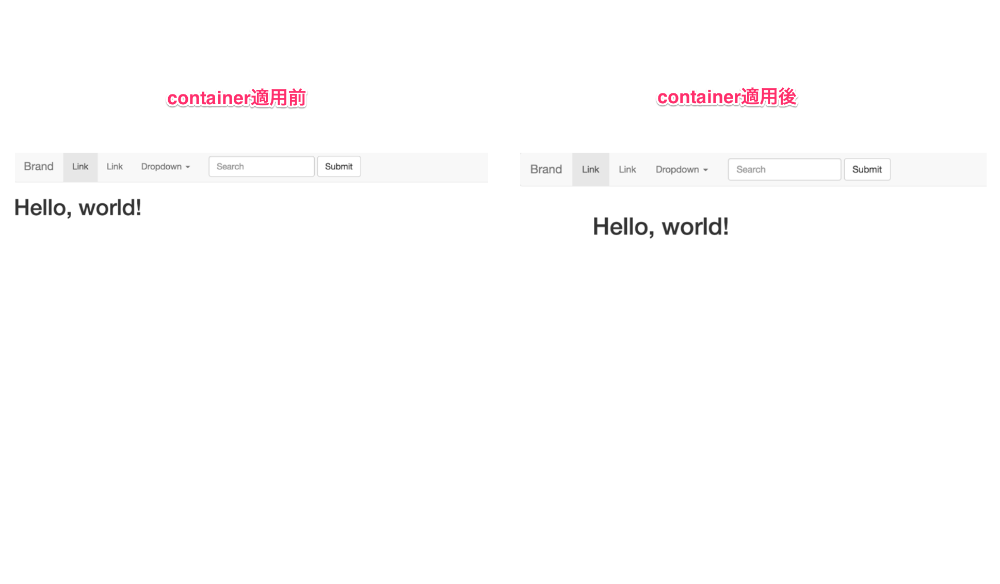
Bootstrapでは、以下の例のようにcontainerクラスをあてた要素の中にgridシステムを入れ子にすることが基本になります。
1 2 3 4 5 6 7 8 9 10 11 12 13 14 15 16 17 18 19 20 21 22 23 24 25 26 27 28 |
#省略
<body>
<h1>Hello, world!</h1>
<nav class="navbar navbar-default">
#省略
</nav>
<div class="container">
<div class="row">
<div class="col-xs-6">
</div>
<div class="col-xs-6">
</div>
</div>
<div class="row">
<div class="col-xs-4">
</div>
<div class="col-xs-4">
</div>
<div class="col-xs-4">
</div>
</div>
</div>
<!-- jQuery (necessary for Bootstrap's JavaScript plugins) -->
<script src="https://ajax.googleapis.com/ajax/libs/jquery/1.11.2/jquery.min.js"></script>
<!-- Include all compiled plugins (below), or include individual files as needed -->
<script src="js/bootstrap.min.js"></script>
</body>
#省略
|
Bootstrap単体では静的なページしか作れませんが、アプリケーションのフレームワークと組み合わせることで、デザインの整ったプロトタイプを簡単に作成することができます。
本項では、Ruby on RailsにBootstrapを導入する方法を紹介します。
BootstrapはCSSのフレームワークです。ようするに予め決められたCSSがあるだけなので、それを決まった場所に組み込むだけでRailsで作成するアプリケーションでも利用することができます。
Railsのアプリケーションを作成するはじめの手順は、以下の通りでした。
① ターミナルの任意のディレクトリでRailsアプリケーションのひな形を作成
② 作成されたアプリケーションのディレクトリまで移動し、データベースを作成する
それぞれ実行していきましょう。
まずは①です。アプリケーションの名前はここでは「bootstrap_test」としますが、任意の名前で構いません。
1 2 3 4 5 6 |
$ cd ~/projects
#projectsディレクトリに移動
$ pwd
#projectsディレクトリにいるか確認
$ rails new bootstrap_test -d mysql
#Railsのアプリケーションのひな形を作成する
|
続いて、DBを作成します。rakeコマンドを利用する際は、bundle execを接頭につけることを忘れないでください。
1 2 3 4 5 6 |
$ cd ~/projects/bootstrap_test
#アプリケーションのディレクトリに移動
$ pwd
#アプリケーションのディレクトリにいるか確認
$ bundle exec rake db:create
#Railsのアプリケーションのデータベースを作成する
|
ここまでできたら、webサーバーを起動して上手くいっているかを確かめてみましょう。
1 2 3 4 5 6 |
$ cd ~/projects/bootstrap_test
#アプリケーションのディレクトリに移動
$ pwd
#アプリケーションのディレクトリにいるか確認
$ rails s
#Railsのアプリケーションを起動する。
|
ブラウザのurl入力欄にlocalhost:3000と入力しエンターキーを押します。以下のようなページが表示されていれば、成功です。
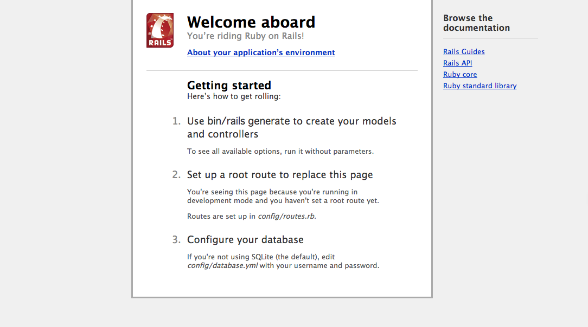
続いてRailsのプロジェクトでBootstrapを利用できるようにします。
といっても、先ほど作ったRailsアプリケーションのひな形にBootstrapのCSSを組み込めば良いだけです。
RailsでBootstrapを利用するためには、まずrailsアプリケーションのディレクトリにあるvendor/assets/javascripts・stylesheetsというディレクトリ下にBootstrapのファイルを置きます。
ダウンロードしてきたBootstrapのフォルダの構成は以下のようになっていると思います。
この内利用するのは、以下のフォルダとファイルのみです。
bootstrap-theme.css
bootstrap.css
fontsフォルダ
bootstrap.js
これらをrailsのアプリケーションフォルダ中に以下のように設置してください。
続いて、railsアプリケーションが読み込むCSS・JSを設定するファイルに、上記の作業で置いたbootstrapのファイル達を読み込むよう書き込みます。
1 2 3 4 5 6 7 8 9 10 11 12 13 14 15 16 |
/*
* This is a manifest file that'll be compiled into application.css, which will include all the files
* listed below.
*
* Any CSS and SCSS file within this directory, lib/assets/stylesheets, vendor/assets/stylesheets,
* or vendor/assets/stylesheets of plugins, if any, can be referenced here using a relative path.
*
* You're free to add application-wide styles to this file and they'll appear at the bottom of the
* compiled file so the styles you add here take precedence over styles defined in any styles
* defined in the other CSS/SCSS files in this directory. It is generally better to create a new
* file per style scope.
*
*= require bootstrap
*= require_tree .
*= require_self
*/
|
1 2 3 4 5 6 7 8 9 10 11 12 13 14 15 16 17 |
// This is a manifest file that'll be compiled into application.js, which will include all the files
// listed below.
//
// Any JavaScript/Coffee file within this directory, lib/assets/javascripts, vendor/assets/javascripts,
// or vendor/assets/javascripts of plugins, if any, can be referenced here using a relative path.
//
// It's not advisable to add code directly here, but if you do, it'll appear at the bottom of the
// compiled file.
//
// Read Sprockets README (https://github.com/sstephenson/sprockets#sprockets-directives) for details
// about supported directives.
//
//= require jquery
//= require jquery_ujs
//= require turbolinks
//= require bootstrap
//= require_tree .
|
以上で準備ができました。あとはviewファイルを呼び出して、実際にBootstrapが適用されるかを確かめましょう。
しかし、いちいちルーティングから設定していくのは大変です。こんな時、てっとりばやくアプリケーションを動かす方法として、scaffoldという機能があります。
scaffoldとはrailsに備わったコマンドで、ある概念に対するルーティング、コントローラー、ビュー、モデルとテーブルの記述やファイル作成を一度に自動でやってくれます。他のコマンドを利用して、controllerやmodelを個別に作成する手間を省けます。この時作成されるルーティングは、railsの定める7つのアクションになります。
概念の名前やテーブルのカラム名などは、以下のように記述します。
1 |
$ rails g scaffold 概念名 カラム名:型 カラム名:型・・・
|
さっそく、使ってみましょう。ここではnoteという概念に対してscaffoldを利用します。
1 2 3 4 5 6 |
$ cd ~/projects/bootstrap_test
# アプリケーションのディレクトリに移動
$ pwd
# アプリケーションのディレクトリにいるか確認
$ rails g scaffold note title:string text:text
# noteという概念に対してscaffoldを利用。カラムはtitleとtextの2つ
|
以下のように表示されれば成功です。
1 2 3 4 5 6 7 8 9 10 11 12 13 14 15 16 17 18 19 20 21 22 23 24 25 26 27 28 29 30 31 32 33 |
$ rails g scaffold note title:string text:text
invoke active_record
create db/migrate/20150418061812_create_notes.rb
create app/models/note.rb
invoke test_unit
create test/models/note_test.rb
create test/fixtures/notes.yml
invoke resource_route
route resources :notes
invoke scaffold_controller
create app/controllers/notes_controller.rb
invoke erb
create app/views/notes
create app/views/notes/index.html.erb
create app/views/notes/edit.html.erb
create app/views/notes/show.html.erb
create app/views/notes/new.html.erb
create app/views/notes/_form.html.erb
invoke test_unit
create test/controllers/notes_controller_test.rb
invoke helper
create app/helpers/notes_helper.rb
invoke test_unit
invoke jbuilder
create app/views/notes/index.json.jbuilder
create app/views/notes/show.json.jbuilder
invoke assets
invoke coffee
create app/assets/javascripts/notes.coffee
invoke scss
create app/assets/stylesheets/notes.scss
invoke scss
create app/assets/stylesheets/scaffolds.scss
|
マイグレーションファイルやモデル、ビュー、コントローラーなどが一気に生成されていることがわかります。
この状態で、一度アプリケーションにアクセスしてみましょう。その前に、マイグレーションを実行する必要があります。
1 2 3 4 5 6 |
$ cd ~/projects/bootstrap_test
# アプリケーションのディレクトリに移動
$ pwd
# アプリケーションのディレクトリにいるか確認
$ bundle exec rake db:migrate
# マイグレーションの実行
|
続いて、サーバーを立ち上げます。
1 2 3 4 5 6 |
$ cd ~/projects/bootstrap_test
# アプリケーションのディレクトリに移動
$ pwd
# アプリケーションのディレクトリにいるか確認
$ rails s
# サーバーを立ち上げる
|
無事サーバーが立ち上がったら、localhost:3000/notesにアクセスしましょう。
以下のような画面が表示されていれば、成功です。
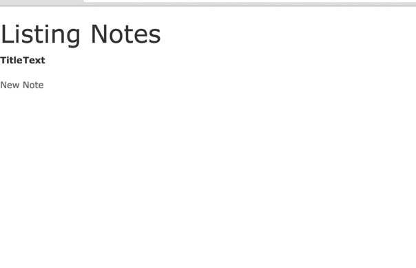
さらに、BootstrapのCSS/Javascriptが効いているか確かめてみましょう。
application.html.erbに、Bootstrapのnavbarのコンポーネントを置いてみます。
1 2 3 4 5 6 7 8 9 10 11 12 13 14 15 16 17 18 19 20 21 22 23 24 25 26 27 28 29 30 31 32 33 34 35 36 37 38 39 40 41 42 43 44 45 46 47 48 49 50 51 52 53 54 55 56 57 58 59 60 61 62 63 64 65 66 67 68 |
<!DOCTYPE html>
<html>
<head>
<title>BootstrapTest</title>
<%= stylesheet_link_tag 'application', media: 'all', 'data-turbolinks-track' => true %>
<%= javascript_include_tag 'application', 'data-turbolinks-track' => true %>
<%= csrf_meta_tags %>
</head>
<body>
<nav class="navbar navbar-default">
<div class="container-fluid">
<!-- Brand and toggle get grouped for better mobile display -->
<div class="navbar-header">
<button type="button" class="navbar-toggle collapsed" data-toggle="collapse" data-target="#bs-example-navbar-collapse-1">
<span class="sr-only">Toggle navigation</span>
<span class="icon-bar"></span>
<span class="icon-bar"></span>
<span class="icon-bar"></span>
</button>
<a class="navbar-brand" href="#">Brand</a>
</div>
<!-- Collect the nav links, forms, and other content for toggling -->
<div class="collapse navbar-collapse" id="bs-example-navbar-collapse-1">
<ul class="nav navbar-nav">
<li class="active"><a href="#">Link <span class="sr-only">(current)</span></a></li>
<li><a href="#">Link</a></li>
<li class="dropdown">
<a href="#" class="dropdown-toggle" data-toggle="dropdown" role="button" aria-expanded="false">Dropdown <span class="caret"></span></a>
<ul class="dropdown-menu" role="menu">
<li><a href="#">Action</a></li>
<li><a href="#">Another action</a></li>
<li><a href="#">Something else here</a></li>
<li class="divider"></li>
<li><a href="#">Separated link</a></li>
<li class="divider"></li>
<li><a href="#">One more separated link</a></li>
</ul>
</li>
</ul>
<form class="navbar-form navbar-left" role="search">
<div class="form-group">
<input type="text" class="form-control" placeholder="Search">
</div>
<button type="submit" class="btn btn-default">Submit</button>
</form>
<ul class="nav navbar-nav navbar-right">
<li><a href="#">Link</a></li>
<li class="dropdown">
<a href="#" class="dropdown-toggle" data-toggle="dropdown" role="button" aria-expanded="false">Dropdown <span class="caret"></span></a>
<ul class="dropdown-menu" role="menu">
<li><a href="#">Action</a></li>
<li><a href="#">Another action</a></li>
<li><a href="#">Something else here</a></li>
<li class="divider"></li>
<li><a href="#">Separated link</a></li>
</ul>
</li>
</ul>
</div><!-- /.navbar-collapse -->
</div><!-- /.container-fluid -->
</nav>
<%= yield %>
</body>
#省略
|
もう一度localhost:3000/notesにアクセスしましょう。以下のようにBootstrapのnavbarが出ていたら成功です。
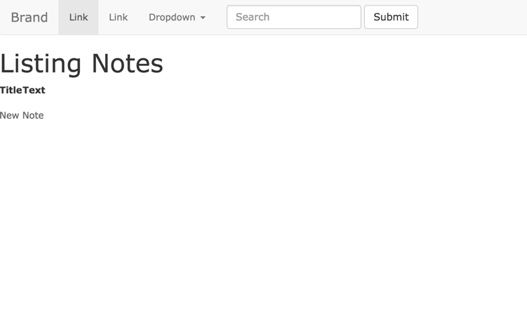
 大宅 誠人
大宅 誠人